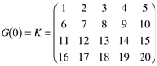
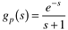
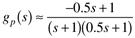
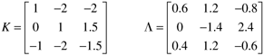
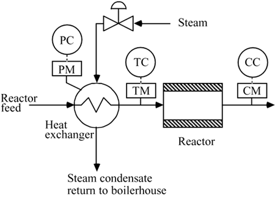
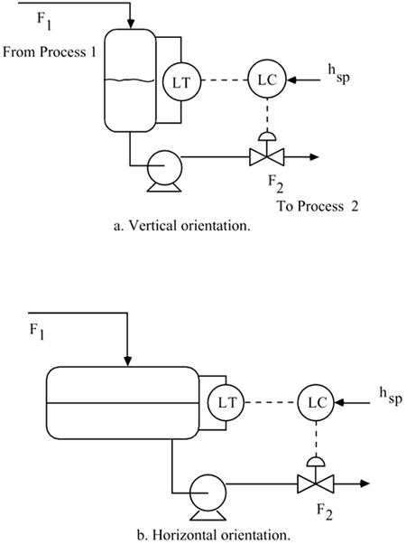
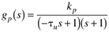
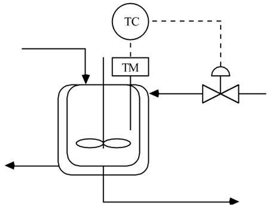
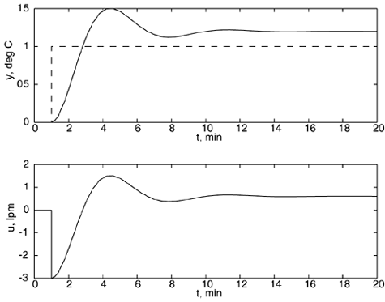
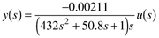

| 1: | Why must the process transfer function be factored in the IMC design procedure? (For example, what happens if the process dead time is not factored out? Also, what happens if a RHP zero is not factored out?) |
| 2: | The main advantage to cascade control is the rejection of inner-loop (secondary) disturbances rather than outer-loop (primary) disturbances. True or False? |
| 3: | Since you are a young process engineer with a good theoretical process-control background, your boss asks you to work on a problem in the catalytic reforming unit. The process has been having trouble maintaining yield specifications and your boss suspects that part of the problem could be due to the control system. You review the process flow sheets and then proceed to the process unit. Your next step is to do which of the following:
Begin discussing, with the process operator, a recent theoretical article from the International Journal of Unapplied Incomprehensible Control. You discuss the various ramifications of pole/zero cancellation, robustness with respect to parameter uncertainty, and so forth, and relate this theoretical treatise to problems in the process unit. Grab a cup of coffee and sit down and discuss the most recent local high school football game with the process operator. After a while, begin to direct the conversation to the subject of the catalytic reforming process and discuss possible operating changes that have occurred during the past few weeks.
|
| 4: | A multivariable process has the following input-output steady-state gain matrix

How many process outputs are there? How many manipulated inputs are there? What is the gain relating input 3 to output 2?
|
| 5: | Consider the first-order + dead-time transfer function
Equation 1 
The tuning parameters for an IMC-based PI controller (not the "improved" version) are (from Table 9-2 in the text): kc = 1/l, tI = 1. Assuming a Padé approximation for dead time, the approximate model is

Find the value of kc which brings the approximate closed-loop system to edge of instability, using the Routh stability criterion. |
| 6: | Consider the following process gain matrix and RGA:

a. Can three SISO control loops be used? b1. If your answer to a is yes, what are the recommended pairings [will these pairings assure stability if one of the loops must be opened (think about the 2 x 2 subsystems)]? Reorder the inputs and outputs such that the paired variables are on the diagonal of the new G(0) matrix. Show the new G(0) matrix and the new L matrix. b2. If your answer to a is no, do you recommend a reduction to two loops? If so, what are your recommendations for input-output pairings for this system?
|
| 7: | The objective of the following process is to produce a product stream with a desired composition. The composition of the product stream is a function of the inlet temperature. The inlet temperature is a function of the steam pressure on the shell side of the feed preheat exchanger. Draw the proper connections of all of the controllers and the valve shown in the following diagram. Draw the corresponding block diagram, labeling all signals, controllers, and measurement devices.  |
| 8: | Consider the process and instrumentation diagrams shown in the surge vessel level control figure below, where the surge vessels are assumed to be cylindrical. 
For which orientation can the surge vessel best be modeled as a linear process? Why? Choose the vessel that you want to analyze. Assume that the steady-state flow rate is 100 gallons/minute, and that the vessel has a residence time of 5 minutes when half-filled with liquid (assume the vessel is one half full at steady state). Assume a length/diameter ratio of 2:1. Also, assume that the control valve (which has a linear valve characteristic) is designed to be one half open at the steady-state operating point. For simplicity, assume that the controller output is the flow rate of the outlet stream. Determine the proportional gain for a proportional-only controller that will just maintain the tank height within a range of 20–80% of the vessel volume, when the inlet stream changes from 100 to 200 gallons/minute. Remember to show the units for the proportional gain. Discuss the advantages and disadvantages of having a fail-open valve.
|
| 9: | An open-loop unstable chemical reactor is known to have a process transfer function with the following form, where the manipulated input is the coolant flow rate (liters/minute) and the measured process output is the reactor temperature (oC)


When a proportional-only controller, with a value kc = –3 lpm/oC, is used, the response to a unit setpoint change is shown below. 
When a PI controller is used, the closed-loop system becomes unstable when the tuning parameter values are kc = –1.333 lpm/oC and tI = 2 minutes.
Question:
What are the values for the process parameters, kp and tu? Hints: Can the final value theorem be used? Can the Routh stability criterion be used? |
| 10: | Type I diabetics must deliver themselves insulin shots several times each day, in an effort to maintain blood glucose values within a desirable range. Portable infusion pumps that provide a continuous delivery of insulin are becoming widely available, and there has been a large effort to develop sensors that provide a continuous blood glucose measurement. The ultimate goal is to create an "artificial pancreas" by forming a feedback control system where blood glucose is the measured process variable and insulin infusion rate is the manipulated input variable.
The Bergman minimal model (with 3 states) has the following input-output third-order transfer function relationship

The open-loop response (in deviation variables) to a 10m-unit/min step input at t = 0 minutes is shown below (where m-unit means milli-units of insulin). As expected, the system has integrating action. [Notice that all of these results are for the case of no meal consumption (no disturbance).]

Show that a proportional-only controller will not have offset to a step closed-loop setpoint change (Hint: Think final value theorem). For a proportional-only controller, what value of controller gain will cause the closed-loop system to become unstable? Show the units for the proportional gain. For any stable controller, what is the long-term insulin infusion rate change for a step glucose setpoint change of –1 mmol/liter? What is surprising or interesting about this result, compared to those of "non-integrating" systems?
|